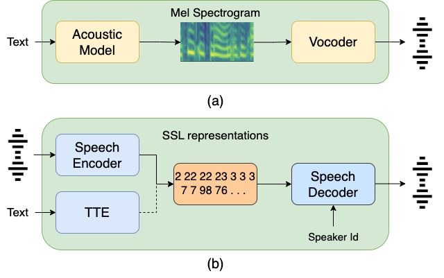

ParrotTTS: Text-to-speech synthesis by exploiting self-supervised representations
Abstract:
Text-to-speech (TTS) systems are modelled as mel-syntheizers followed by speech-vocoders since the era of statistical TTS that carried forward into neural designs.
We propose an alternative approach to TTS modelling referred to as ParrotTTS borrowing from self-supervised learning (SSL) methods.
ParrotTTS takes a two-step approach by initially training a speech-to-speech model on unlabelled data that is abundantly available similar to Wav2vec2, and HuBERT.
This is followed by a text-to-embedding model that leverages speech with aligned transcriptions to extend it to TTS.
ParrotTTS achieves competitive mean opinion scores on naturalness compared to traditional TTS models but significantly improves over the latter's data efficiency of transcribed pairs required for voice cloning.
This further paves the path to training TTS models on generically trained SSL speech models.
1. Proposed ParrotTTS

(a) Traditional TTS and (b) ParrotTTS
2. Demo of Single speaker TTS
A single speaker TTS trained on LJSpeech dataset.
Text
SS-Tacotron2
SS-FastSpeech2
SS-FastSpeech2-SupASR
SS-Tacotron2-UnsupASR
ParrotTTS: AR-TTE
ParrotTTS: NAR-TTE
ParrotTTS: NAR-TTE (Half transcripts)
Under the conditions referred to in the previous chapter.
And therefore approximately one point six seconds after the president was shot in the head.
Modern printers understand this, but it is only practiced in the very best establishments.
And investigative capabilities of the agencies now operating in this field but will continue.
The department hopes to design a practical system which will fully meet the needs of the protective research section of the secret service.
A formal and thorough description of the responsibilities of the advance agent is now in preparation by the service.
3. Demo of Multi-speaker TTS
The samples are generated from various models of Multi-speaker TTS on VCTK speakers.
Text
GT-Mel+Vocoder
MS-FastSpeech2
MS-FastSpeech2-SupASR
VC-FastSpeech2
ParrotTTS: NAR-TTE
Until recently she worked as a recruitment consultant in London.
The advisors had some discussions but no conclusion was reached.
I tried to be cautious but its hard in that role.
The key player in this matter is now the prime minister.
No one in downing street can speak the language of the unions.